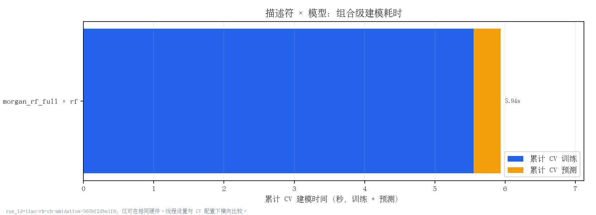
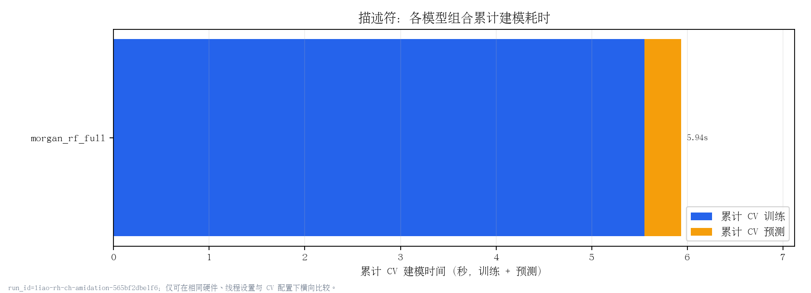
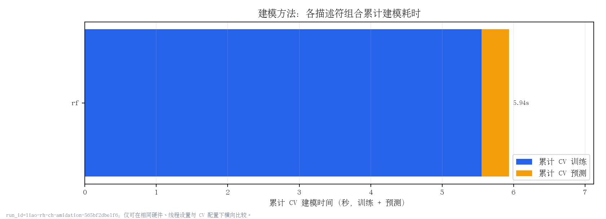
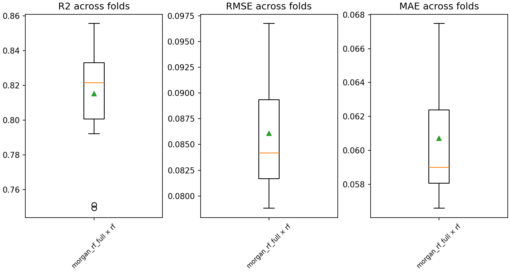
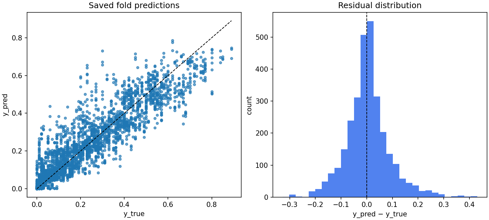

生成时间：2026-09-23 02:21:13；本报告只读取已保存 artefacts，不会重新训练模型。
| run_id | config_hash | dataset_sha256 | code_git_commit | dataset_path | grouping | cv | derived_from |
|---|---|---|---|---|---|---|---|
| liao-rh-ch-amidation-565bf2dbe1f6 | 565bf2dbe1f6ea90b837ae55678c16882d62f8c4eee882388860f8a025aa28e7 | 7b9e22069ddb458b5d8b9d6f0a1691ded11d581b38dc075ce6a972a1757e09a0 | 47523b54a2dd5c75103ef3de4e91514c7f4d71e2 | /home/wangzh685/桌面/ord-data/YONOD/result/pnecessity_utility_prepare_v1/data/liao_rh_ch_amidation.csv | {"group_column": "non_p_input_group_id", "max_group_fraction": 0.8, "protocol_label": "pnecessity_within_source_non_p_input", "strategy": "precomputed_column"} | {"n_repeats": 3, "n_splits": 5, "seed": 20260918} | docs/manifests/, docs/predictions/, docs/folds/, docs/metrics/ |
此处记录特征、切分与随机种子的运行证据；即使参数匹配，仍需另行核对数据、RDKit/sklearn 版本与指标后才能讨论数值复现。
| protocol | status |
|---|---|
| 未声明论文协议 | 通用 benchmark；不可据此宣称论文流程对齐 |
建模任务只读取 descriptors/*.npz；失败描述符的模型任务被隔离跳过。
| descriptor | status | stage | artifact_path | n_total | n_valid | feature_dim | skipped_model_count | reason |
|---|---|---|---|---|---|---|---|---|
| morgan_rf_full | computed | precompute | /home/wangzh685/桌面/ord-data/YONOD/result/pnecessity_utility_liao_rh_ch_amidation_morgan_rf_full_v1/feature/morgan_rf_full.npz | 1000 | 1000 | 3072 | 0 | 首次生成描述符文件 |
| split_id | repeat | fold | n_train | n_valid | n_train_groups | n_valid_groups | max_group_size | group_leakage |
|---|---|---|---|---|---|---|---|---|
| split-b74a2f8d8950 | 1 | 1 | 800 | 200 | 800 | 200 | 1 | False |
| split-b74a2f8d8950 | 1 | 2 | 800 | 200 | 800 | 200 | 1 | False |
| split-b74a2f8d8950 | 1 | 3 | 800 | 200 | 800 | 200 | 1 | False |
| split-b74a2f8d8950 | 1 | 4 | 800 | 200 | 800 | 200 | 1 | False |
| split-b74a2f8d8950 | 1 | 5 | 800 | 200 | 800 | 200 | 1 | False |
| split-b74a2f8d8950 | 2 | 1 | 800 | 200 | 800 | 200 | 1 | False |
| split-b74a2f8d8950 | 2 | 2 | 800 | 200 | 800 | 200 | 1 | False |
| split-b74a2f8d8950 | 2 | 3 | 800 | 200 | 800 | 200 | 1 | False |
| split-b74a2f8d8950 | 2 | 4 | 800 | 200 | 800 | 200 | 1 | False |
| split-b74a2f8d8950 | 2 | 5 | 800 | 200 | 800 | 200 | 1 | False |
| split-b74a2f8d8950 | 3 | 1 | 800 | 200 | 800 | 200 | 1 | False |
| split-b74a2f8d8950 | 3 | 2 | 800 | 200 | 800 | 200 | 1 | False |
| split-b74a2f8d8950 | 3 | 3 | 800 | 200 | 800 | 200 | 1 | False |
| split-b74a2f8d8950 | 3 | 4 | 800 | 200 | 800 | 200 | 1 | False |
| split-b74a2f8d8950 | 3 | 5 | 800 | 200 | 800 | 200 | 1 | False |
strict benchmark 的比较/排名只纳入 evaluation_protocol=manifest_outer_cv 且 expected/valid fold 完整的组合；旧 autogluon_internal_holdout 只展示并明确排除。
| split_id | descriptor | model | evaluation_protocol | expected_folds | valid_metric_folds | is_complete | strict_rank_eligible | strict_rank_exclusion_reason | autogluon_time_limit | autogluon_presets | autogluon_num_cpus | autogluon_seed_policy | autogluon_version | model_artifact_cleanup |
|---|---|---|---|---|---|---|---|---|---|---|---|---|---|---|
| split-b74a2f8d8950 | morgan_rf_full | rf | manifest_outer_cv | 15 | 15 | True | True | 可进入 strict benchmark 比较/排名 | — | — | — | — | — | — |
| split_id | evaluation_protocol | descriptor | model | r2 | r2_std | rmse | rmse_std | mae | mae_std | complete | expected_folds | valid_metric_folds |
|---|---|---|---|---|---|---|---|---|---|---|---|---|
| split-b74a2f8d8950 | manifest_outer_cv | morgan_rf_full | rf | 0.8151 | 0.0313 | 0.0861 | 0.0054 | 0.0607 | 0.0033 | True | 15 | 15 |
| run_id | config_hash | split_id | evaluation_protocol | descriptor | model | expected_folds | available_folds | valid_metric_folds | is_complete | missing_or_excluded_reason |
|---|---|---|---|---|---|---|---|---|---|---|
| liao-rh-ch-amidation-565bf2dbe1f6 | 565bf2dbe1f6ea90b837ae55678c16882d62f8c4eee882388860f8a025aa28e7 | split-b74a2f8d8950 | manifest_outer_cv | morgan_rf_full | rf | 15 | 15 | 15 | True |
时间口径：`total_model_time_s = total_train_time_s + total_predict_time_s`，均为该组合全部有效外部 CV fold 的累计值。描述符特征化与 CLI 端到端墙钟时间不计入柱状图；不完整、缺失或非法时间的组合保留状态，但不进入耗时排序。描述符和建模方法图是组合成本的两种汇总视图，不应与组合图相加，也不把共享特征化时间重复归因给模型。
| run_id | config_hash | split_id | evaluation_protocol | descriptor | model | expected_folds | completed_folds | is_complete | time_status | time_status_detail | is_time_comparable | total_train_time_s | mean_train_time_s | median_train_time_s | max_train_time_s | total_predict_time_s | total_model_time_s |
|---|---|---|---|---|---|---|---|---|---|---|---|---|---|---|---|---|---|
| liao-rh-ch-amidation-565bf2dbe1f6 | 565bf2dbe1f6ea90b837ae55678c16882d62f8c4eee882388860f8a025aa28e7 | split-b74a2f8d8950 | manifest_outer_cv | morgan_rf_full | rf | 15 | 15 | True | complete_and_comparable | True | 5.5515 | 0.3701 | 0.3705 | 0.3786 | 0.3846 | 5.9361 |

每根柱为该描述符下所有完整且时间可比较模型组合的累计时间。
| run_id | config_hash | split_id | evaluation_protocol | aggregation_dimension | item | expected_combinations | comparable_combinations | noncomparable_combinations | is_time_comparable | time_status | time_status_detail | total_train_time_s | total_predict_time_s | total_model_time_s |
|---|---|---|---|---|---|---|---|---|---|---|---|---|---|---|
| liao-rh-ch-amidation-565bf2dbe1f6 | 565bf2dbe1f6ea90b837ae55678c16882d62f8c4eee882388860f8a025aa28e7 | split-b74a2f8d8950 | manifest_outer_cv | descriptor | morgan_rf_full | 1 | 1 | 0 | True | complete_and_comparable | 5.5515 | 0.3846 | 5.9361 |

每根柱为该建模方法在所有描述符下完整且时间可比较组合的累计时间。
| run_id | config_hash | split_id | evaluation_protocol | aggregation_dimension | item | expected_combinations | comparable_combinations | noncomparable_combinations | is_time_comparable | time_status | time_status_detail | total_train_time_s | total_predict_time_s | total_model_time_s |
|---|---|---|---|---|---|---|---|---|---|---|---|---|---|---|
| liao-rh-ch-amidation-565bf2dbe1f6 | 565bf2dbe1f6ea90b837ae55678c16882d62f8c4eee882388860f8a025aa28e7 | split-b74a2f8d8950 | manifest_outer_cv | model | rf | 1 | 1 | 0 | True | complete_and_comparable | 5.5515 | 0.3846 | 5.9361 |



无可展示记录；请查看相应排除/完整性表。
无可展示记录；请查看相应排除/完整性表。
无可展示记录；请查看相应排除/完整性表。
无可展示记录；请查看相应排除/完整性表。
无可展示记录；请查看相应排除/完整性表。
| run_dir | disk_bytes | all_valid_fold_cumulative_train_time_s | all_valid_fold_cumulative_predict_time_s | all_valid_fold_cumulative_model_time_s | time_comparable_combinations | time_noncomparable_combinations | metric_exclusions | comparison_exclusions |
|---|---|---|---|---|---|---|---|---|
| /home/wangzh685/桌面/ord-data/YONOD/result/pnecessity_utility_liao_rh_ch_amidation_morgan_rf_full_v1 | 1150344 | 5.5515 | 0.3846 | 5.9361 | 1 | 0 | 0 | 0 |
| state_store | count |
|---|---|
| succeeded | 15 |
无可展示记录；请查看相应排除/完整性表。
比较单位是 CV fold。交叉验证折并非完全独立，因此 p 值不是唯一证据；应结合折级差值、bootstrap CI、稳定性图和任务缺失情况解读。`no_significant_difference` 仅表示当前数据和统计功效下未检出充分证据，不代表两种方法完全相同。Tukey HSD 表基于 fold 值的多重比较，和配对 t 检验并列呈现，不能任选更有利的结果。